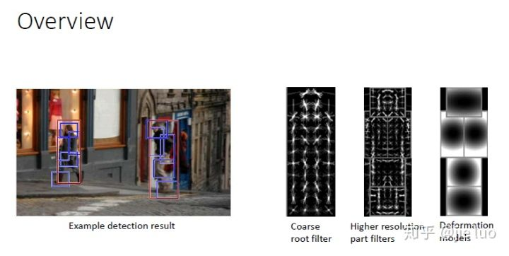
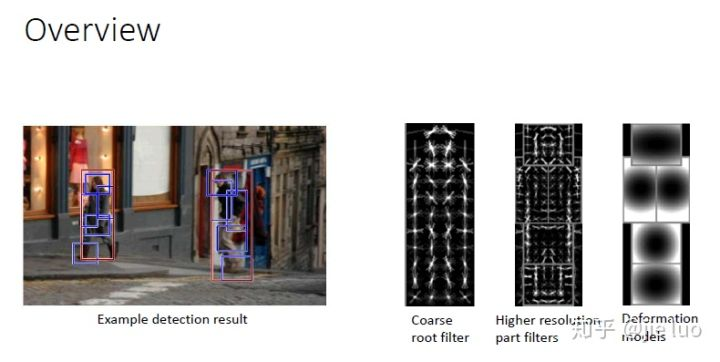
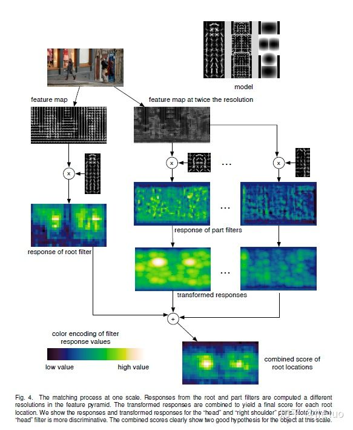
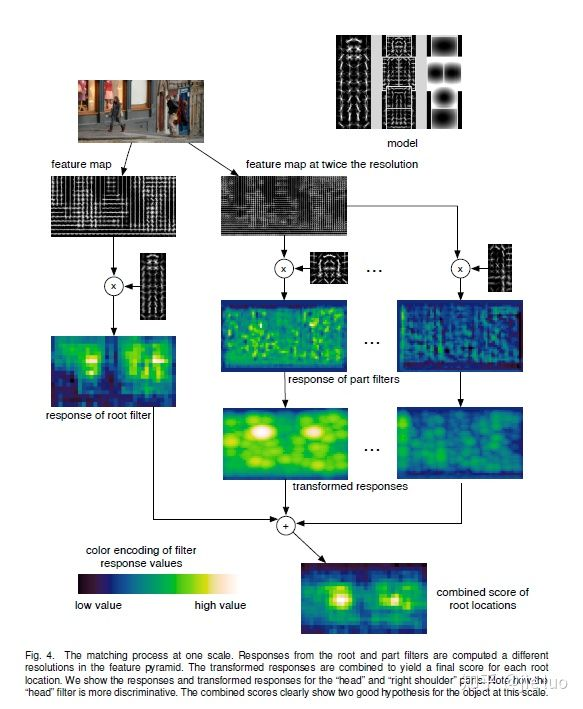
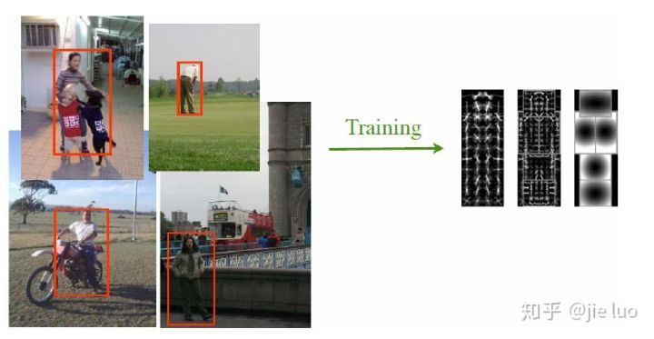
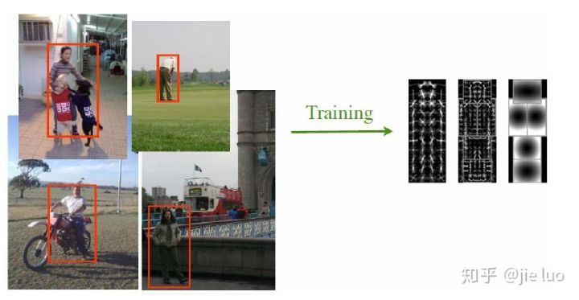
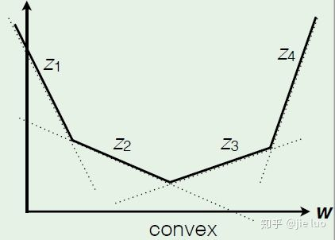
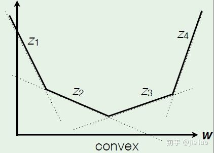

DPM模型
- 前言
- 什么是DPM模型
- DPM的物体检测
- DPM的训练
前言
Deformable part model 为可形变部件模型，简称DPM模型。这种模型非常地直观，它将目标对象建模成几个部件的组合。比如它将人类视为头部/身体/手/腿的组合。尽管看起来DPM非常简单，但是如何将这种intuition转化为数学模型，是非常地考验内功的（SVM，convex optimization，坐标下降法，梯度下降法）。直到2005年，这种模型才被提出来，因为这其中涉及了很多的优化/训练方法。被提出来之后，DPM大红大紫，但是深度学习技术火了之后，DPM似乎消失了光芒。如果可视化深度学习每一层的特征，可以看到深度学习似乎也在学习这些部件（人的头/手/脚）的特征，但是深度学习训练起来比较简单。而DPM则加入较多的启发式规则，变得复杂。这篇文章将会简单讲解我对DPM的了解，但是不会很细，我想在后面再写一篇关于DPM的源代码分析的文章。
什么是DPM模型
HOG特征这篇文章讲到，我们可以使用HOG+linear SVM来做人脸检测。我们可以根据图像计算出HOG pyramid，然后学习一个权重filter，然后计算这两个矩阵的内积，就会得到一个分数，我们再训练得出分数阀值就可以检测人类。但是在现实生活中，物体是有很多变化的，包括人的各种动作/车的各种形状/不同的视角和光照等等。而DPM则是一个更好的表示模型，上面这些变化对DPM影响不大。
 
上图则给出了DPM模型的预览图。它将人类表示成头/手/大腿/小腿等部件。每个部件的位置不是固定的，也就是说可以形变的。上图左边给出检测结果，其中红框是一整个人，蓝框则是检测出的各个部件。右边则是不同的filter，其中root filter是关注整个人的，part filter是关注身体几个部件的。而deformation model则是考虑不同形变带来的惩罚，也就是说你的手不能离身体太远，否则就会扣分。而且每个部件和主体的相对位置是比较稳定的，头部在上方，手部在中间，腿在下边。下面我们就来看看作者是如何给DPM模型建模的。
如上图右边所示，一个DPM模型包括一个root filter 和 n个部件模型
，其中
表示第i个部件的filter，
表示第i个部件跟root filter的相对位置，
表示第i个部件的形变参数（用来定义不同位置的形变代价）。
那么DPM模型用一个得分函数来判断是否存在目标对象：
(1)
其中第一项是每个filter跟feature vector的点乘，用来判断像不像人。第二项是形变系数点乘形变特征，用来确定形变代价，b是偏置值，用于混合模型的多个component的比较（混合模型后面会说）。
那么对于一个假定的位置z，其对应的分数可以记为：
(2)
其中， 是未知参数，这是模型需要通过训练学习得到的。而
是已知量,包括HOG特征和形变特征，可以通过计算得到。
(3)
(4)
以上就是主要的DPM 模型。
DPM的物体检测
按照文章的思路，我们先讨论如何做detection。
这里我们假设我们已经通过训练得到了未知量 ,即 每一个filter权重，每一个形变代价，以及偏置值b我们都是知道的。
首先root location的分数等于所有部件遍历所有可能位置组合得到的最好情况的和。
(5)
那么root location分数高的就表示可能存在人，低的就不存在人，通过这种方式我们就检测出人。
但是对于一个特征金字塔（HOG pyramid），root location有很多位置，而每一个root location又有很多个不同的部件组合，所以计算量是非常大的。作者想出了一个办法，就是使用动态规划和距离变换的技术使计算复杂度降低到了o（nk），其中n是root location的个数，k是部件的个数。
关于距离变换的技术，大概思路是先计算每一个部件的response图，这是提前计算的。它通过filter 点乘 feature得到。然后给定一个root location（x,y），我们计算能够带给root location最大得分的偏移量（dx,dy）。
 
上图给出检测的总流程。给定一个DPM 模型，给定一张图像，输出是否存在人，如果存在，人在哪里。
首先计算图像对应的特征图（feature map），这里用到了HOG特征。然后计算root filter的response以及part filter 的response。对于每一个part filter response,需要做距离变换，因为要考虑形变代价。再然后结合各个部分的response加上偏置值就得到了root location的综合得分，这个得分就可以判断是否有人了。
好，现在将怎么训练得出 。
DPM的训练
 
训练的要求：
- 给出一个数据集，包含正例和反例。其中正例会给出人所在的方框。
- 人的身体部位位置不会给出，也就是说，part location的位置是不知道的，所以是latent。我们必须通过机器学习算法去找到身体部件位置的最佳值。
- 目标是学习得出
,即 每一个filter权重，每一个形变代价，以及偏置值b。
对于一个样例x，分类器将会通过以下公式打分：
(6)
其中 是模型参数，z是隐藏值（latent values），就是说头部/手的位置我是不知道的。Z（x）是样例x可能的位置集合。
给出训练集：
其中 。
作者类比传统SVM，给出了训练需要优化的目标函数：
(7)
其中第一项叫做正则项，就是说未知参数不能按比例无限增大。第二项是损失函数，C控制两项之间的权重。
由于包含了latent variable，因此称这种分类器为latent SVM。
在讨论怎么训练之前我们要说一下latent SVM的半凸性。这里默认大家都知道什么是凸函数（简单说就是两边高，中间低的函数图像）。
latent SVM的semi-convexity
- 对于负样本，y的值是-1，损失函数变成
，根据公式(6),对于每一个给定的z，
都是
 
所以是一个凸函数，那么整个公式（7）也将是一个凸优化的问题。所以是很好解的。
- 对于正样本，y的值是1，损失项将会变成凹函数，那么整个公式（7）的凹凸性将无法确定。但是作者在这里用了一个取巧的办法，就是把latent variable变成已知的，也就是说身体部位的位置限定为一个值，那么这时
Training the DPM
- 假设身体部件的位置都是固定的，然后用传统的SVM来训练身体部位分类器。
- 使用训练得到的分类器，在每个训练样例中找到最佳的身体部位所在位置。
通过这样的两步迭代，就可以最终学习到 。
关于负样本
负样本是使用一个叫做收集困难的负样本来实现的。就比如我们训练做题都是多做错题来训练的一样。负样本有很多，但是我们只需选择那些被误识别为正例的反例，就可以使SVM分类器快速收敛。
关于混合模型
因为视角不同，将会导致不同的形状（比如人的正面和侧面）。就好像盲人摸象一样。那么就需要多训练几个DPM，最后组成一个mixture model，这样才能准确识别到目标物体。
参考文献及链接：
1:A Discriminatively Trained, Multiscale, Deformable Part Model
2:Object Detection with Discriminatively Trained Part-Based Models
4:DPM PPT
还没有评论